Step 1: Install
Install KotoType and FFmpeg.
Open setup checklist
KotoType GitHubVoice-to-Text for macOS
KotoType stays in your menu bar. Hold your hotkey while speaking, release it to transcribe, and insert text directly at your cursor.
Install KotoType and FFmpeg.
Open setup checklistUse the setup window buttons in order until all checks pass.
View first-launch stepsFocus a text field, hold hotkey to record, release to transcribe.
Open recording walkthroughDownload the latest release, open the DMG, and drag KotoType.app into Applications.
FFmpeg is not bundled. Install it once, then confirm it is available in your terminal.
brew install ffmpeg
ffmpeg -version⌘+⌥) to start recording.This quick demo summarizes how recording works: hold hotkey, speak, release, and text is inserted.
Hold a global hotkey while speaking, then release to transcribe and insert text at the active cursor position.
Noise reduction, normalization, and automatic gain handling improve transcription from noisy or quiet input.
Built around local processing, so your workflow stays fast and privacy-friendly without mandatory cloud usage.
Menu bar UX, setup checks, transcription history, audio-file import, and launch-at-login support.
brew install ffmpeg.⌘+⌥).KotoType is currently distributed without Apple Developer signing. If macOS blocks launch, use the version-specific Gatekeeper override below.
In Apple’s official override steps, this is handled in Gatekeeper (Privacy & Security), not in firewall settings.
KotoType is designed for local-first operation. There is no mandatory cloud upload in the core workflow.
Open System Settings > Privacy & Security and click Open Anyway for KotoType, then reopen the app.
Re-check Accessibility permission and confirm KotoType is enabled in System Settings > Privacy & Security > Accessibility.
Make sure the target app has an active editable cursor and re-check Accessibility permission from the setup window.
Run brew install ffmpeg in Terminal, then verify with ffmpeg -version.
Core usage is local-first and does not require mandatory cloud upload.
If setup or recognition fails, start from the troubleshooting and support guides.
Open TroubleshootingTrack current release notes, known limitations, and fixes.
View Releases